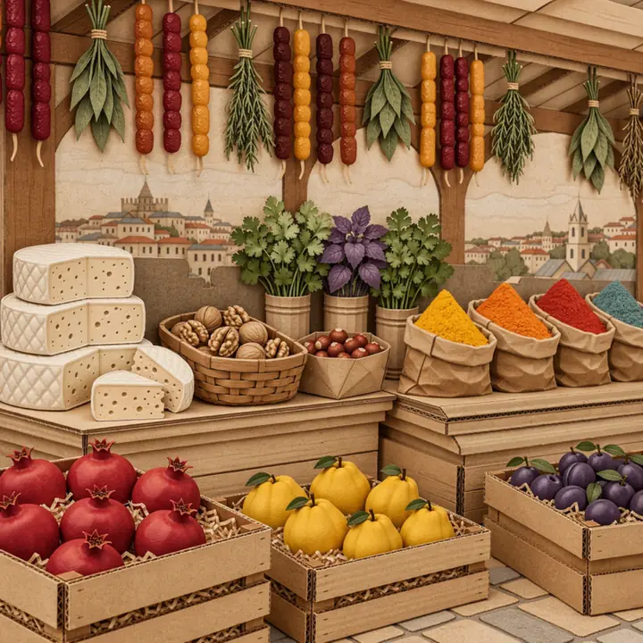
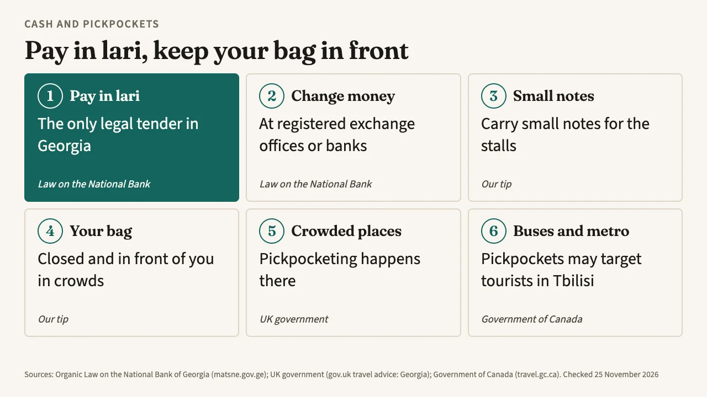

- Dezerter Bazaar
- 7:00–17:00
- Produce market area
- 2,000 m²
- Vendors on the bridge
- 100+
- Bridge market since
- the 1950s
- Metro
- 06:00–00:00
- Food safety hotline (NFA)
- 15 01
This page is part of the Georgia Travel Guide. Checked on 25 November 2026.

Dry Bridge Market: the Tbilisi flea market
Dry Bridge Market is a daily flea market on a bridge in central Tbilisi, between Saarbrücken Square and the 9 April Garden. Dedaena Park is next to it, and the Presidential Palace is a short walk away.

Its history. The market has existed in its current form since the 1950s, when locals began bringing their old items there to sell. The bridge itself dates from the mid-19th century.
Painters. Part of the bridge is an artists' garden, with paintings by local painters on show.
What you'll find: antiques, Soviet items and paintings
Old household objects, USSR-era memorabilia and art.
Sellers offer Second World War medals, symbols of that era, enamel engravings, silver jewellery, antique tableware, radios, ornate swords and work by local artists and craftsmen. The painters' page also lists coins and rare dishes. Vintage clothes, paintings, antique things and books are sold too. Musical instruments and, before the New Year, tree decorations are on sale as well.
Thinking of buying something old? First read Taking antiques and Soviet items out of Georgia.
Can you haggle at the Dry Bridge?
Yes: vendors on the bridge barter with locals and tourists alike. Official pages give no rules for bargaining.
Our tip. Ask the price before you pick an item up, and count your change before you walk away.
Dezerter Bazaar: Tbilisi's food market
Dezerter, also spelled Deserters' Bazaar, is a produce market near Tbilisi's Central Railway Station, covering about 2,000 square metres. A typical day there starts around 7:00, and the official hours are 7:00–17:00 daily.
What's sold: fruit, cheese, herbs, spices and churchkhela
Produce that sellers bring in from the villages around the city, along with imported goods.
Stalls sell fruit, vegetables, nuts, dairy (sour cream, sulguni and cottage cheese), herbs, churchkhela, tkemali, tklapi, Georgian spices and bay leaves. For what these dishes and sauces are, see Traditional Georgian food: what to try first.

How to get to Dezerter Bazaar
Our tip: take the metro to Station Square (Vagzlis Moedani). The official market page puts the stalls near the Central Railway Station but names no metro stop or walking route.
For the platforms and transfers, see Changing lines at Station Square.
Other markets: Navtlughi and Lilo
Navtlughi is a food and flower market by Samgori railway station. Lilo Market opens 8:00–17:00 daily; official pages say nothing more about it.
At 3 Meveli Street. Stalls sell vegetables, milk, Georgian cheeses, beef and chicken; according to the page, a quality assurance lab pre-tests and certifies the produce. There is also a herb market, a wholesale flower market from dawn to 10 am, vintage shops with copper and porcelain dishes, and small artisans who repair bags, belts and jewellery. The nearest metro is Samgori. The page gives no opening times.
Tbilisi market opening hours and the best time to go
The food stalls near the Central Railway Station open 7:00–17:00 daily; the bridge market runs every day, in the daytime.
Why no times for the bridge. The tourism administration's pages give different hours for it, so we do not quote one. Check on the day.
Getting there. The metro runs from 06:00 to 00:00 every day. For the bridge, our tip is Freedom Square metro station (Tavisuplebis Moedani); official pages name no stop for it. By bus, plan the route in the TTC journey planner.

Our tip. Shop for food in the morning: the market day starts around 7:00.
What to buy at Tbilisi markets
Old objects and paintings on the bridge; cheese, herbs, nuts and churchkhela at the produce markets near the two railway stations.
Taking wine or chacha home? See Taking chacha home: UK airport and customs rules.
Is market food safe? Fruit, cheese, meat and water
Official advice comes down to clean hands, no raw meat or seafood, and care with food from street vendors.
Hands and raw food. The CDC advises washing hands with soap before eating, or using a hand sanitiser with at least 60% alcohol. It advises against eating raw meat or seafood, cut-up fruit and fresh salads. It also advises avoiding food from street vendors; if you do eat it, choose food cooked and steaming hot.
Vaccine. The CDC recommends the hepatitis A vaccine for unvaccinated travellers one year old or older going to Georgia.
Water. Water quality varies, and bottled water is widely available.
Who to call. The National Food Agency (NFA), a public body under the Ministry of Environment and Agriculture, runs a hotline on 15 01. For cheese, raw milk and food poisoning, see Food safety rules for travellers.
If you feel unwell. To find a doctor in the city, use the catalogue of doctors and clinics in Tbilisi on 100doc.ge. If a life is at risk, dial 112.

Our tip. Keep wet wipes and hand sanitiser in your bag, and rinse anything you eat raw with bottled water. With children, hold hands in the crowd and carry water and wipes.
Cash, change and pickpockets
Pay in local cash, in small notes, and keep your bag closed and in front of you.
Money. The lari is the only legal tender in Georgia, except in free zones, duty-free shops and some cases set by the National Bank. It has held that role since 2 October 1995. Change money at exchange offices registered with the National Bank of Georgia or at a bank.
Our tip. Carry small notes and do not count on paying by card. Watch the scales when your food is weighed. More in Cash or card in Georgia?
What governments advise. The UK government says crime levels are low and advises sensible precautions against pick-pocketing, particularly in crowded places, and not leaving valuables unattended. The Government of Canada says: "Petty crime, such as pickpocketing and bag snatching, occurs, especially in crowded urban areas and at public gatherings." It adds that thieves may target tourists on Tbilisi buses and the metro.
Neither government names the markets. For evenings and the city overall, read Is Tbilisi safe day and night?

Taking antiques and Soviet items out of Georgia
Cultural valuables need an export permit from the ministry; modern souvenirs are not covered.
Law No 985-II on the export of cultural valuables sets the rules:
- The ministry responsible for culture issues the permit. It is the basis for clearing customs, is one-off and is valid for three months (art. 28).
- The state expertise is paid for by the owner (art. 16–17).
- Only the lawful owner or their representative may export the item (art. 33).
- Cultural valuables include, for example, writings, coins and seals more than 100 years old, and furniture more than 100 years old. For other groups, such as handmade paintings and old books, the law sets no age. Modern souvenirs and mass-produced items are not included (art. 4).
- Illegal export brings liability under the law (art. 39).
Age is one test, not the only one. Medals and coins from the stalls may be new or old; if you are not sure, ask the seller and the ministry before you buy.

Our tip. Ask the seller how old the item is and keep the receipt. If in doubt, check with customs before your flight.
Frequently asked questions
Is it safe to shop at Tbilisi markets?
Do Tbilisi markets take cards?
Is there a Christmas market in Tbilisi?
How much do things cost at the markets?
Official pages give no price list for food or old items. Ask the price before you pick something up.
What should I buy at a Tbilisi market?
Can I take antiques out of Georgia?
Sources
- Georgian National Tourism Administration: Opening hours in Georgia ↑
- Georgian National Tourism Administration: Dry Bridge flea market (the tourism administration's pages give different hours for the Dry Bridge; check on the day) ↑
- Matsne: Organic Law of Georgia on the National Bank of Georgia ↑
- UK government (FCDO): Georgia travel advice, safety and security (no date on the page; accessed 25 November 2026) ↑
- Government of Canada: travel advice for Georgia (last updated 27 August 2026) ↑
- Matsne: Law of Georgia on the Export of Cultural Valuables from Georgia and Their Import to Georgia, No 985-II (version of 12 December 2024) ↑
- Georgian National Tourism Administration: Painters' market on the Dry Bridge ↑
- Georgian National Tourism Administration: Where to purchase Georgian souvenirs in Tbilisi ↑
- Georgian National Tourism Administration: Dry Bridge market (in Georgian) ↑
- Georgian National Tourism Administration: the Dezerter market page ↑
- Tbilisi Transport Company: history ↑
- Georgian National Tourism Administration: Navtlugi Bazaar ↑
- Tbilisi Transport Company: Journey Planner ↑
- CDC: Food and water safety ↑
- CDC: Georgia, traveler view (reviewed 25 August 2026) ↑
- UK government (FCDO): Georgia travel advice, health ↑
- National Food Agency: Who we are; hotline 15 01 on the Main office page ↑
- Georgian National Tourism Administration: Currency ↑
This guide is general information, not medical advice: the doctor decides on your care.